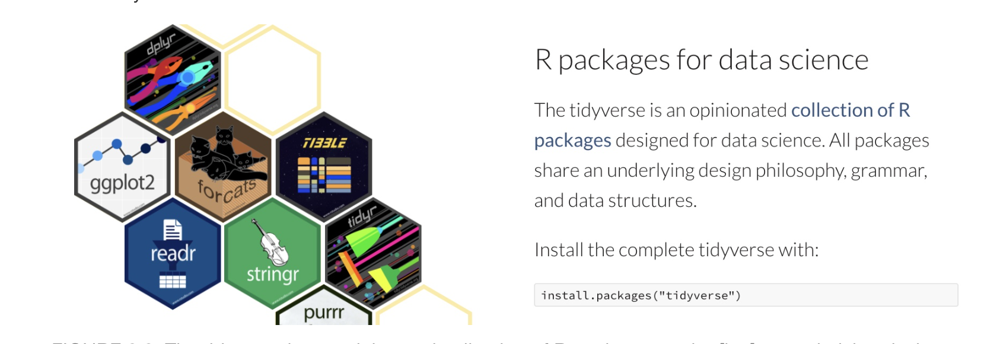
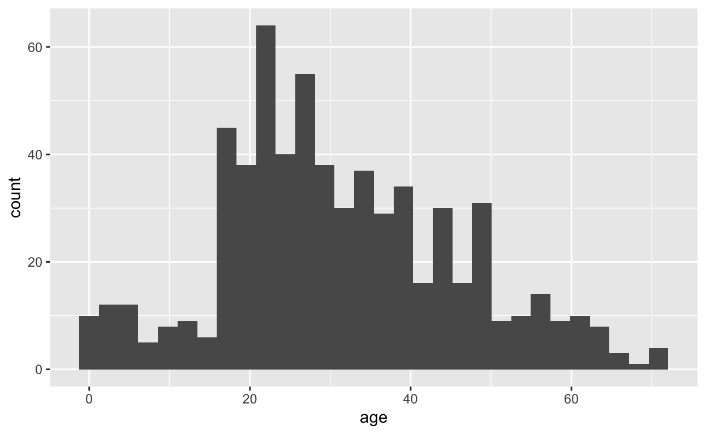
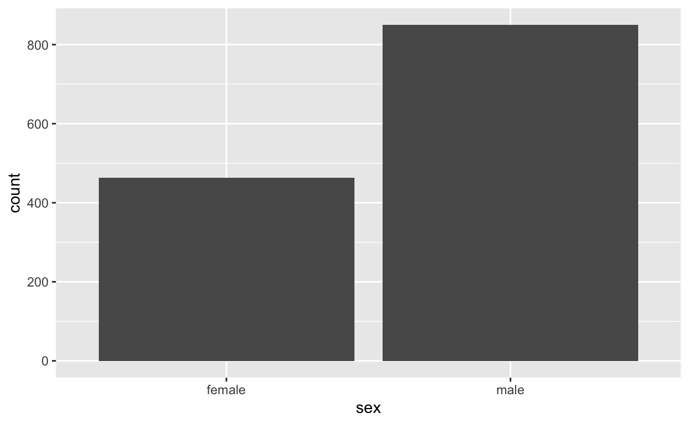
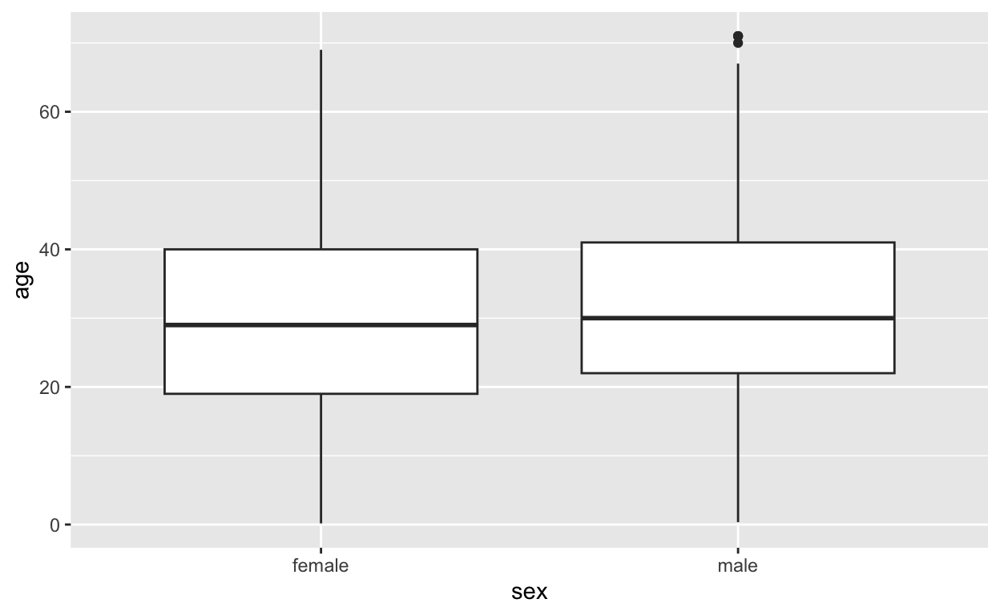
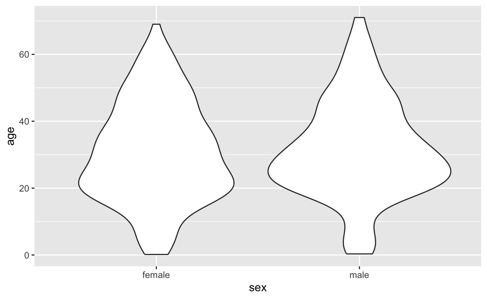
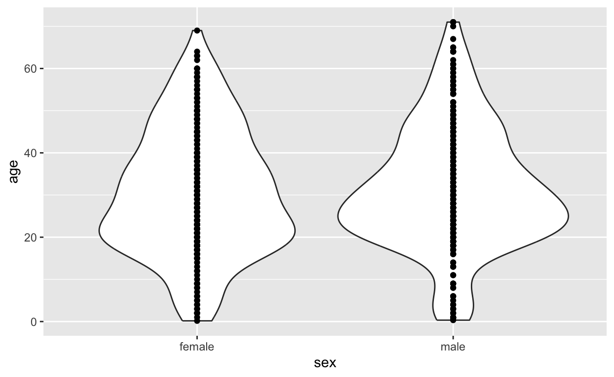
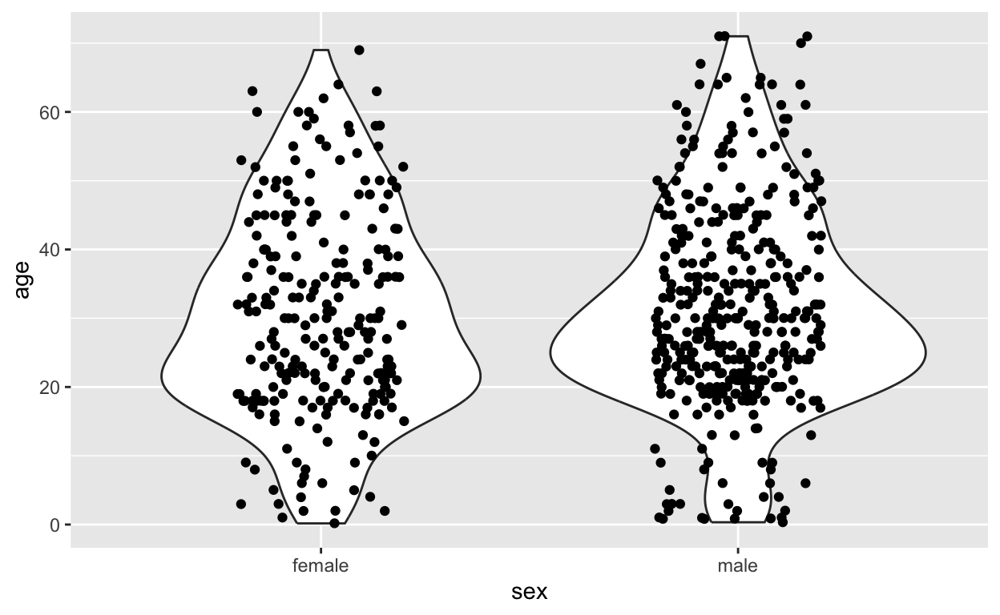
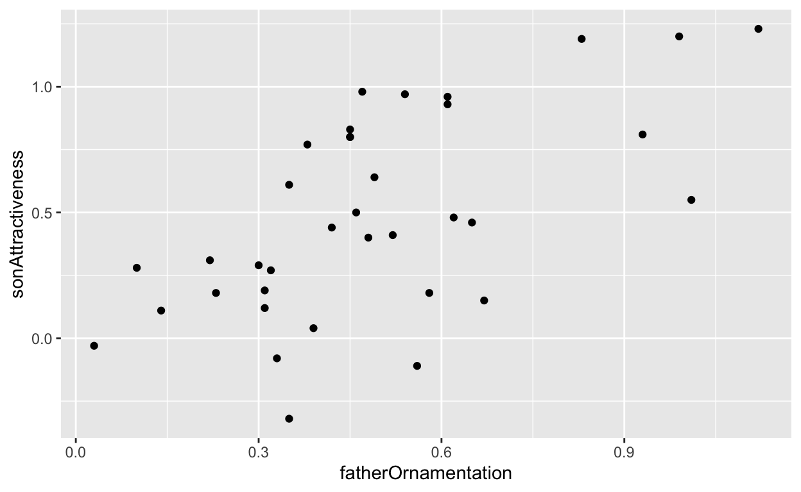
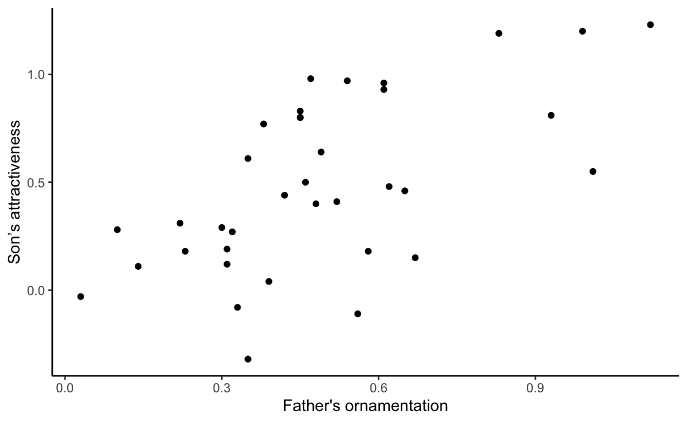

Parts of this tutorial come from Y. Brandvain’s Applied Biostatistics Bookdown, Whitlock & Schuster’s R Labs, and Rstudio Cloud’s Primers
What you know already
In Labs 1-2 you learned:
- About three data types of variables : factors, strings or characters, numeric.
- How to use R as a calculator.
- About four data structures in R: vectors, matrices, data.frames, and lists.
- How to create vectors, matrices, and data.frames and index their elements.
- How to create a basic R script with code and comments.
- How to have a general look at the imported data and understand its structure
- How to extract parts of the data for further analysis
Outline for today
- Learn about another type of script to write R code and text: R markdown
- Learn how to handling missing data in some of the functions we’ve learned so far.
- Learn about the ideal ways to save data files for analysis in R.
- A soft introduction to the Tidyverse suit of packages, focusing on
the
dplyrandggplotpackages. - Using
dplyrto manipulate data, in particular the functions:filter,select,arrage,mutate, andsummarise - Using
ggplot2to create figures, in particular: histograms, barplots, scatter plots, violin plots and boxplots
Learning Outcomes
- Learn to create R markdown files in Rstudio.
- Learn how missing data is handled by R.
- Learn how to make your data “tidy”
- Learn how to write a file containing the processed data
- Learn how to perform routine data wrangling tasks with
dplyrcore functions:filter,select,mutate,arrange,transmute,summarise - Pipe
%>%these operations together. - Know the basics of how to make graphs in R, such as histograms, strip charts, bar plots, violin plots, box plots, and scatter plots.
- Be able to suggest improvements to basic graphs to improve readability and accurate communication
- Explain the idea of mapping data onto aesthetics, and the use of
different
geoms. - Match common plots to common data type.
- Use
geomsin ggplot to generate the common plots (above).
Tasks
- Understand Lab Assignment I
- Take very shot R markdown walkthrough
- Watch the other two videos about R Markdown
- Open an R markdown script and keep notes in that format from now on.
- Complete the rest of this tutorial.
- Complete the Data Camp Activities set as due 09/21.(if not today then by next lab)
- Complete the R quiz 3 (will be posted by tomorrow on Moodle).
Lab Assignment I
We will go over this together.
- Open the “Lab Assignment I (phagocytes) project” under “Lab Assingments”
- Have a look at the spread sheet
- Have a look at the Readme.txt file
- Have a look at the .Rmd template file
- If you haven’t done so already, read the LA1 instructions (Moodle) as soon as possible
- Have a look at the experimental system which will be shown in class
R markdown
Take this short tutorial from Rstudio about the basics of R markdown (you can go up until “Notebooks” but no need to work through the final 4 steps starting at (“slide presentations”).
Here is a very useful R Markdown cheatsheet.
No need to watch these now, but try to watch them before you start working on LA1. (these are also posted in the assignment instructions)
Optional for this Lab:
- DataCamp has an entire course on how to use R markdown. I assigned the first two chapters for next lab but you are welcome to start working on it sooner since it migth help with LA1.
Missing Data
Sometimes we do not have all variables measured on all individuals in the data set. When this happens, we need a space holder in our data files so that R knows that the data is missing. The standard way of doing this in R is to put “NA” (without the quotes) in the location that the data would have gone. NA is short for “not available”.
For example, in the Titanic data set, we do not know the age of
several passengers. Let’s look at it. Use read.csv to read
in the titanic.csv file from the data
directory:
titanicData <- read.csv("data/titanic.csv", stringsAsFactors = TRUE)Now look at age by selecting the column age in the
titanicData object:
#Have R print out the list of the age variable, which you can do easily by just indexing it using the $ sign.
titanicData$age## [1] 29.0000 2.0000 30.0000 25.0000 0.9167 47.0000 63.0000 39.0000 58.0000
## [10] 71.0000 47.0000 19.0000 NA NA NA 50.0000 24.0000 36.0000
## [19] 37.0000 47.0000 26.0000 25.0000 25.0000 19.0000 28.0000 45.0000 39.0000
## [28] 30.0000 58.0000 NA 45.0000 22.0000 NA 41.0000 48.0000 NA
## [37] 44.0000 59.0000 60.0000 45.0000 NA 53.0000 58.0000 36.0000 33.0000
## [46] NA NA 36.0000 36.0000 14.0000 11.0000 49.0000 NA 36.0000
## [55] NA 46.0000 47.0000 27.0000 31.0000 NA NA NA NA
## [64] 27.0000 26.0000 NA NA 64.0000 37.0000 39.0000 55.0000 NA
## [73] 70.0000 69.0000 36.0000 39.0000 38.0000 NA 27.0000 31.0000 27.0000
## [82] NA 31.0000 17.0000 NA NA 4.0000 27.0000 50.0000 48.0000
## [91] 49.0000 48.0000 39.0000 23.0000 53.0000 36.0000 NA NA 30.0000
## [100] 24.0000 19.0000 28.0000 23.0000 64.0000 60.0000 NA 49.0000 NA
## [109] 44.0000 22.0000 60.0000 48.0000 37.0000 35.0000 47.0000 22.0000 45.0000
## [118] 49.0000 NA 71.0000 54.0000 38.0000 19.0000 58.0000 45.0000 23.0000
## [127] 46.0000 25.0000 21.0000 48.0000 49.0000 45.0000 36.0000 NA 55.0000
## [136] 52.0000 24.0000 NA NA NA 16.0000 44.0000 51.0000 42.0000
## [145] 35.0000 35.0000 38.0000 35.0000 NA 50.0000 49.0000 46.0000 NA
## [154] 58.0000 41.0000 NA 42.0000 40.0000 NA NA NA 42.0000
## [163] 55.0000 50.0000 16.0000 NA 29.0000 21.0000 30.0000 15.0000 30.0000
## [172] NA NA NA 46.0000 54.0000 36.0000 28.0000 NA 65.0000
## [181] 33.0000 44.0000 37.0000 NA 55.0000 47.0000 36.0000 58.0000 31.0000
## [190] 23.0000 19.0000 64.0000 NA 64.0000 22.0000 28.0000 NA NA
## [199] 22.0000 NA NA 18.0000 17.0000 52.0000 46.0000 56.0000 NA
## [208] NA 43.0000 31.0000 NA NA 33.0000 NA 27.0000 55.0000
## [217] 54.0000 NA 61.0000 48.0000 18.0000 13.0000 21.0000 NA NA
## [226] NA 34.0000 40.0000 36.0000 50.0000 39.0000 56.0000 28.0000 56.0000
## [235] 56.0000 24.0000 18.0000 NA 24.0000 23.0000 45.0000 40.0000 6.0000
## [244] 57.0000 NA 32.0000 62.0000 54.0000 43.0000 52.0000 NA 62.0000
## [253] 67.0000 63.0000 61.0000 46.0000 52.0000 39.0000 18.0000 48.0000 NA
## [262] 49.0000 39.0000 17.0000 46.0000 NA 31.0000 NA 61.0000 47.0000
## [271] 64.0000 60.0000 60.0000 55.0000 54.0000 21.0000 57.0000 45.0000 31.0000
## [280] 50.0000 50.0000 27.0000 20.0000 51.0000 NA 21.0000 NA NA
## [289] 36.0000 NA NA NA NA NA NA NA NA
## [298] NA NA NA NA NA NA NA NA NA
## [307] 40.0000 NA NA 32.0000 NA NA NA NA NA
## [316] NA 33.0000 NA NA NA NA NA 30.0000 28.0000
## [325] 18.0000 NA 34.0000 32.0000 57.0000 18.0000 23.0000 36.0000 28.0000
## [334] 51.0000 32.0000 19.0000 28.0000 36.0000 4.0000 1.0000 12.0000 34.0000
## [343] 19.0000 23.0000 26.0000 NA 27.0000 15.0000 45.0000 40.0000 20.0000
## [352] 25.0000 36.0000 25.0000 NA 42.0000 26.0000 26.0000 0.8333 31.0000
## [361] NA 19.0000 54.0000 44.0000 52.0000 30.0000 30.0000 NA NA
## [370] 29.0000 NA 29.0000 27.0000 24.0000 35.0000 31.0000 8.0000 22.0000
## [379] 30.0000 NA 20.0000 NA 21.0000 49.0000 8.0000 28.0000 18.0000
## [388] NA 28.0000 22.0000 25.0000 18.0000 32.0000 18.0000 NA 42.0000
## [397] 34.0000 8.0000 NA NA 23.0000 21.0000 19.0000 NA NA
## [406] NA 38.0000 NA 38.0000 35.0000 35.0000 38.0000 24.0000 16.0000
## [415] 26.0000 45.0000 24.0000 21.0000 22.0000 NA 34.0000 30.0000 50.0000
## [424] 30.0000 23.0000 1.0000 44.0000 28.0000 6.0000 30.0000 NA 43.0000
## [433] 45.0000 7.0000 24.0000 24.0000 49.0000 48.0000 NA 34.0000 32.0000
## [442] 21.0000 18.0000 53.0000 23.0000 21.0000 NA 52.0000 42.0000 36.0000
## [451] 21.0000 41.0000 NA NA 33.0000 17.0000 NA NA NA
## [460] NA NA NA 23.0000 34.0000 NA 22.0000 NA NA
## [469] 45.0000 NA NA 31.0000 30.0000 26.0000 NA 34.0000 26.0000
## [478] 22.0000 1.0000 3.0000 NA NA NA 25.0000 NA 48.0000
## [487] NA 57.0000 NA NA NA 2.0000 NA 27.0000 19.0000
## [496] 30.0000 20.0000 45.0000 NA 46.0000 41.0000 13.0000 19.0000 30.0000
## [505] 48.0000 71.0000 54.0000 NA NA 64.0000 32.0000 18.0000 2.0000
## [514] 32.0000 3.0000 26.0000 19.0000 NA 20.0000 29.0000 39.0000 22.0000
## [523] NA 24.0000 NA 28.0000 NA 50.0000 20.0000 40.0000 42.0000
## [532] 21.0000 32.0000 34.0000 NA NA 33.0000 2.0000 8.0000 36.0000
## [541] 34.0000 30.0000 28.0000 23.0000 0.8333 25.0000 3.0000 50.0000 NA
## [550] 21.0000 NA NA 25.0000 18.0000 20.0000 30.0000 59.0000 30.0000
## [559] 35.0000 22.0000 NA 25.0000 41.0000 25.0000 14.0000 50.0000 22.0000
## [568] NA 27.0000 29.0000 27.0000 30.0000 22.0000 35.0000 30.0000 28.0000
## [577] 23.0000 NA 12.0000 40.0000 36.0000 28.0000 32.0000 29.0000 4.0000
## [586] 2.0000 NA NA 36.0000 33.0000 NA NA NA 32.0000
## [595] NA NA 26.0000 NA 30.0000 24.0000 NA 18.0000 42.0000
## [604] 13.0000 16.0000 35.0000 16.0000 25.0000 18.0000 20.0000 30.0000 26.0000
## [613] 40.0000 24.0000 41.0000 18.0000 0.8333 23.0000 20.0000 25.0000 35.0000
## [622] 17.0000 32.0000 20.0000 39.0000 39.0000 6.0000 2.0000 17.0000 38.0000
## [631] 9.0000 26.0000 11.0000 4.0000 20.0000 26.0000 25.0000 18.0000 24.0000
## [640] 35.0000 40.0000 38.0000 5.0000 9.0000 3.0000 13.0000 23.0000 5.0000
## [649] NA 45.0000 23.0000 17.0000 27.0000 23.0000 20.0000 32.0000 33.0000
## [658] 3.0000 NA NA NA 18.0000 40.0000 26.0000 15.0000 45.0000
## [667] 18.0000 27.0000 22.0000 19.0000 26.0000 22.0000 20.0000 32.0000 21.0000
## [676] 18.0000 26.0000 6.0000 NA NA 9.0000 40.0000 32.0000 NA
## [685] 26.0000 18.0000 20.0000 NA 29.0000 22.0000 22.0000 35.0000 21.0000
## [694] 20.0000 19.0000 18.0000 18.0000 38.0000 NA 30.0000 17.0000 21.0000
## [703] 21.0000 21.0000 NA NA 24.0000 33.0000 33.0000 28.0000 16.0000
## [712] 37.0000 28.0000 NA 24.0000 21.0000 NA 32.0000 29.0000 26.0000
## [721] 18.0000 20.0000 19.0000 24.0000 24.0000 36.0000 31.0000 31.0000 30.0000
## [730] 22.0000 NA 43.0000 35.0000 27.0000 19.0000 30.0000 36.0000 3.0000
## [739] 9.0000 59.0000 19.0000 44.0000 17.0000 NA 45.0000 22.0000 19.0000
## [748] 29.0000 30.0000 34.0000 28.0000 0.3333 27.0000 25.0000 24.0000 22.0000
## [757] 21.0000 17.0000 NA NA 26.0000 33.0000 1.0000 0.1667 25.0000
## [766] 36.0000 36.0000 30.0000 NA 23.0000 26.0000 19.0000 65.0000 NA
## [775] 42.0000 43.0000 32.0000 19.0000 30.0000 24.0000 23.0000 NA 24.0000
## [784] 24.0000 23.0000 22.0000 NA 18.0000 16.0000 45.0000 NA NA
## [793] NA 47.0000 5.0000 NA NA NA NA NA NA
## [802] NA NA NA NA NA 21.0000 18.0000 9.0000 48.0000
## [811] 16.0000 NA NA 25.0000 NA NA 22.0000 16.0000 NA
## [820] 33.0000 NA 9.0000 41.0000 38.0000 40.0000 43.0000 14.0000 16.0000
## [829] 9.0000 10.0000 6.0000 11.0000 40.0000 32.0000 NA 20.0000 37.0000
## [838] 28.0000 19.0000 NA NA NA NA NA NA NA
## [847] NA NA NA NA NA NA NA NA NA
## [856] NA NA NA NA NA NA NA NA NA
## [865] NA NA NA NA NA NA NA NA NA
## [874] NA NA NA NA NA NA NA NA NA
## [883] NA NA NA NA NA NA NA NA NA
## [892] NA NA NA NA NA NA NA NA NA
## [901] NA NA NA NA NA NA NA NA NA
## [910] NA NA NA NA NA NA NA NA NA
## [919] NA NA NA NA NA NA NA NA NA
## [928] NA NA NA NA NA NA NA NA NA
## [937] NA NA NA NA NA NA NA NA NA
## [946] NA NA NA NA NA NA NA NA NA
## [955] NA NA NA NA NA NA NA NA NA
## [964] NA NA NA NA NA NA NA NA NA
## [973] NA NA NA NA NA NA NA NA NA
## [982] NA NA NA NA NA NA NA NA NA
## [991] NA NA NA NA NA NA NA NA NA
## [1000] NA NA NA NA NA NA NA NA NA
## [1009] NA NA NA NA NA NA NA NA NA
## [1018] NA NA NA NA NA NA NA NA NA
## [1027] NA NA NA NA NA NA NA NA NA
## [1036] NA NA NA NA NA NA NA NA NA
## [1045] NA NA NA NA NA NA NA NA NA
## [1054] NA NA NA NA NA NA NA NA NA
## [1063] NA NA NA NA NA NA NA NA NA
## [1072] NA NA NA NA NA NA NA NA NA
## [1081] NA NA NA NA NA NA NA NA NA
## [1090] NA NA NA NA NA NA NA NA NA
## [1099] NA NA NA NA NA NA NA NA NA
## [1108] NA NA NA NA NA NA NA NA NA
## [1117] NA NA NA NA NA NA NA NA NA
## [1126] NA NA NA NA NA NA NA NA NA
## [1135] NA NA NA NA NA NA NA NA NA
## [1144] NA NA NA NA NA NA NA NA NA
## [1153] NA NA NA NA NA NA NA NA NA
## [1162] NA NA NA NA NA NA NA NA NA
## [1171] NA NA NA NA NA NA NA NA NA
## [1180] NA NA NA NA NA NA NA NA NA
## [1189] NA NA NA NA NA NA NA NA NA
## [1198] NA NA NA NA NA NA NA NA NA
## [1207] NA NA NA NA NA NA NA NA NA
## [1216] NA NA NA NA NA NA NA NA NA
## [1225] NA NA NA NA NA NA NA NA NA
## [1234] NA NA NA NA NA NA NA NA NA
## [1243] NA NA NA NA NA NA NA NA NA
## [1252] NA NA NA NA NA NA NA NA NA
## [1261] NA NA NA NA NA NA NA NA NA
## [1270] NA NA NA NA NA NA NA NA NA
## [1279] NA NA NA NA NA NA NA NA NA
## [1288] NA NA NA NA NA NA NA NA NA
## [1297] NA NA NA NA NA NA NA NA NA
## [1306] NA NA NA NA NA NA NA NAIf you look through the results, you will see that most individuals have numbers in this list, but some have NA. These NAs are the people for which we do not have age information.
By the way, the titanic.csv file simply has nothing in
the places where there is missing data. When R loaded it, it replaced
the empty spots with NA automatically.
We have already seen in lab 2 how to calculate the mean of a vector
of data using mean(). Unfortunately, if there are missing
data we need to tell R how to deal with it.
A (somewhat annoying) quirk of R is that if we try to take the mean of a list of numbers that include missing data, we get an NA for the result!
mean(titanicData$age)## [1] NATo get the mean of all the numbers that we do have, we have to add an
option to the mean() function. This option is
na.rm = TRUE:
mean(titanicData$age, na.rm = T)## [1] 31.19418This tells R to remove (“rm”) the NAs before taking the mean. It turns out that the mean age of passengers that we have information for was about 31.2.
na.rm = TRUE can be added to many functions in R,
including median(), as we shall see next.
The median of a series of numbers is the “middle” number – half of the numbers in the list are greater the median and half are below it. It can be calculated in R by using median().
median(titanicData$age, na.rm = TRUE)## [1] 30A handy function (which you’ve seen in Lab 2) that will return both
the mean and median at the same time (along with other information such
as the first and third quartiles) is summary().
summary(titanicData$age)## Min. 1st Qu. Median Mean 3rd Qu. Max. NA's
## 0.1667 21.0000 30.0000 31.1942 41.0000 71.0000 680From left to right, this output gives us the smallest (minimum) value in the list (“Min.”), the first quartile (“1st Qu.”), the median, the mean, the third quartile (“3rd Qu.”), the largest (maximum) value (“Max.”), and finally, the number of individuals with missing values (”NA’s”).
- The first quartile is the value in the data that is larger than a quarter of the data points.
- The third quartile is larger than ¾ of the data.
- These are also called the 25th percentile and the 75th percentile, respectively. (You may remember these from boxplots, where the top and bottom of the box mark the 75th and 25th percentiles, respectively.)
Measures of variability
In Lab 2 we saw variance and standard deviation. Today we will also see coefficient of variation and interquartile ranges. We will look into all of these when there are missing data.
To calculate the variance and standard deviation of
data with NAs, use na.rm=T:
var(titanicData$age)## [1] NAvar(titanicData$age, na.rm = TRUE)## [1] 217.4895sd(titanicData$age)## [1] NAsd(titanicData$age, na.rm = TRUE)## [1] 14.74753Coefficient of variation
Surprisingly, there is no standard function in R to calculate the coefficient of variation. You can do this yourself, though, directly from the definition:
100 * sd(titanicData$age, na.rm = TRUE) / mean(titanicData$age, na.rm = TRUE) ## [1] 47.27653Make sure you understand the command above before continuing!
Range and interquartile range
Another handy function is range. But if we try to run it
on our data, we get a discouraging result.
range(titanicData$age)## [1] NA NACan you imagine how to solve this? You guessed correctly:
range(titanicData$age, na.rm = T)## [1] 0.1667 71.0000This will output the minimum and maximum values in the vector
titanicData$age.
The interquartile range (or IQR) is the difference between the third quartile and the first quartile; in other words the range covered by the middle half of the data. It can be calculated easily with IQR().
IQR(titanicData$age, na.rm = TRUE)## [1] 20Note: you can also obtain the quartiles and IQR by running
summary on the data. You don’t need to use
na.rm=T. In fact, summary will actually report whether
there are missing data or not. The third quartile is 41 and the first
quartile is 21, so the difference is 41 – 21 = 20:
summary(titanicData$age)## Min. 1st Qu. Median Mean 3rd Qu. Max. NA's
## 0.1667 21.0000 30.0000 31.1942 41.0000 71.0000 680The summary() function told you that
titanicData$age has 680 values that are NAs. What
proportion of values are NAs?
680/length(titanicData$age) #divide the nr of NAs by total length## [1] 0.5178979More generally, you might not want to have to type in that number yourself. How can you ask R whether an element in the vector is NA or not?
is.na(titanicData$age)[1] #boolean. Asks if first element of vector is NA## [1] FALSEis.na(titanicData$age) # returns a boolean vector with TRUE/FALSE for each position## [1] FALSE FALSE FALSE FALSE FALSE FALSE FALSE FALSE FALSE FALSE FALSE FALSE
## [13] TRUE TRUE TRUE FALSE FALSE FALSE FALSE FALSE FALSE FALSE FALSE FALSE
## [25] FALSE FALSE FALSE FALSE FALSE TRUE FALSE FALSE TRUE FALSE FALSE TRUE
## [37] FALSE FALSE FALSE FALSE TRUE FALSE FALSE FALSE FALSE TRUE TRUE FALSE
## [49] FALSE FALSE FALSE FALSE TRUE FALSE TRUE FALSE FALSE FALSE FALSE TRUE
## [61] TRUE TRUE TRUE FALSE FALSE TRUE TRUE FALSE FALSE FALSE FALSE TRUE
## [73] FALSE FALSE FALSE FALSE FALSE TRUE FALSE FALSE FALSE TRUE FALSE FALSE
## [85] TRUE TRUE FALSE FALSE FALSE FALSE FALSE FALSE FALSE FALSE FALSE FALSE
## [97] TRUE TRUE FALSE FALSE FALSE FALSE FALSE FALSE FALSE TRUE FALSE TRUE
## [109] FALSE FALSE FALSE FALSE FALSE FALSE FALSE FALSE FALSE FALSE TRUE FALSE
## [121] FALSE FALSE FALSE FALSE FALSE FALSE FALSE FALSE FALSE FALSE FALSE FALSE
## [133] FALSE TRUE FALSE FALSE FALSE TRUE TRUE TRUE FALSE FALSE FALSE FALSE
## [145] FALSE FALSE FALSE FALSE TRUE FALSE FALSE FALSE TRUE FALSE FALSE TRUE
## [157] FALSE FALSE TRUE TRUE TRUE FALSE FALSE FALSE FALSE TRUE FALSE FALSE
## [169] FALSE FALSE FALSE TRUE TRUE TRUE FALSE FALSE FALSE FALSE TRUE FALSE
## [181] FALSE FALSE FALSE TRUE FALSE FALSE FALSE FALSE FALSE FALSE FALSE FALSE
## [193] TRUE FALSE FALSE FALSE TRUE TRUE FALSE TRUE TRUE FALSE FALSE FALSE
## [205] FALSE FALSE TRUE TRUE FALSE FALSE TRUE TRUE FALSE TRUE FALSE FALSE
## [217] FALSE TRUE FALSE FALSE FALSE FALSE FALSE TRUE TRUE TRUE FALSE FALSE
## [229] FALSE FALSE FALSE FALSE FALSE FALSE FALSE FALSE FALSE TRUE FALSE FALSE
## [241] FALSE FALSE FALSE FALSE TRUE FALSE FALSE FALSE FALSE FALSE TRUE FALSE
## [253] FALSE FALSE FALSE FALSE FALSE FALSE FALSE FALSE TRUE FALSE FALSE FALSE
## [265] FALSE TRUE FALSE TRUE FALSE FALSE FALSE FALSE FALSE FALSE FALSE FALSE
## [277] FALSE FALSE FALSE FALSE FALSE FALSE FALSE FALSE TRUE FALSE TRUE TRUE
## [289] FALSE TRUE TRUE TRUE TRUE TRUE TRUE TRUE TRUE TRUE TRUE TRUE
## [301] TRUE TRUE TRUE TRUE TRUE TRUE FALSE TRUE TRUE FALSE TRUE TRUE
## [313] TRUE TRUE TRUE TRUE FALSE TRUE TRUE TRUE TRUE TRUE FALSE FALSE
## [325] FALSE TRUE FALSE FALSE FALSE FALSE FALSE FALSE FALSE FALSE FALSE FALSE
## [337] FALSE FALSE FALSE FALSE FALSE FALSE FALSE FALSE FALSE TRUE FALSE FALSE
## [349] FALSE FALSE FALSE FALSE FALSE FALSE TRUE FALSE FALSE FALSE FALSE FALSE
## [361] TRUE FALSE FALSE FALSE FALSE FALSE FALSE TRUE TRUE FALSE TRUE FALSE
## [373] FALSE FALSE FALSE FALSE FALSE FALSE FALSE TRUE FALSE TRUE FALSE FALSE
## [385] FALSE FALSE FALSE TRUE FALSE FALSE FALSE FALSE FALSE FALSE TRUE FALSE
## [397] FALSE FALSE TRUE TRUE FALSE FALSE FALSE TRUE TRUE TRUE FALSE TRUE
## [409] FALSE FALSE FALSE FALSE FALSE FALSE FALSE FALSE FALSE FALSE FALSE TRUE
## [421] FALSE FALSE FALSE FALSE FALSE FALSE FALSE FALSE FALSE FALSE TRUE FALSE
## [433] FALSE FALSE FALSE FALSE FALSE FALSE TRUE FALSE FALSE FALSE FALSE FALSE
## [445] FALSE FALSE TRUE FALSE FALSE FALSE FALSE FALSE TRUE TRUE FALSE FALSE
## [457] TRUE TRUE TRUE TRUE TRUE TRUE FALSE FALSE TRUE FALSE TRUE TRUE
## [469] FALSE TRUE TRUE FALSE FALSE FALSE TRUE FALSE FALSE FALSE FALSE FALSE
## [481] TRUE TRUE TRUE FALSE TRUE FALSE TRUE FALSE TRUE TRUE TRUE FALSE
## [493] TRUE FALSE FALSE FALSE FALSE FALSE TRUE FALSE FALSE FALSE FALSE FALSE
## [505] FALSE FALSE FALSE TRUE TRUE FALSE FALSE FALSE FALSE FALSE FALSE FALSE
## [517] FALSE TRUE FALSE FALSE FALSE FALSE TRUE FALSE TRUE FALSE TRUE FALSE
## [529] FALSE FALSE FALSE FALSE FALSE FALSE TRUE TRUE FALSE FALSE FALSE FALSE
## [541] FALSE FALSE FALSE FALSE FALSE FALSE FALSE FALSE TRUE FALSE TRUE TRUE
## [553] FALSE FALSE FALSE FALSE FALSE FALSE FALSE FALSE TRUE FALSE FALSE FALSE
## [565] FALSE FALSE FALSE TRUE FALSE FALSE FALSE FALSE FALSE FALSE FALSE FALSE
## [577] FALSE TRUE FALSE FALSE FALSE FALSE FALSE FALSE FALSE FALSE TRUE TRUE
## [589] FALSE FALSE TRUE TRUE TRUE FALSE TRUE TRUE FALSE TRUE FALSE FALSE
## [601] TRUE FALSE FALSE FALSE FALSE FALSE FALSE FALSE FALSE FALSE FALSE FALSE
## [613] FALSE FALSE FALSE FALSE FALSE FALSE FALSE FALSE FALSE FALSE FALSE FALSE
## [625] FALSE FALSE FALSE FALSE FALSE FALSE FALSE FALSE FALSE FALSE FALSE FALSE
## [637] FALSE FALSE FALSE FALSE FALSE FALSE FALSE FALSE FALSE FALSE FALSE FALSE
## [649] TRUE FALSE FALSE FALSE FALSE FALSE FALSE FALSE FALSE FALSE TRUE TRUE
## [661] TRUE FALSE FALSE FALSE FALSE FALSE FALSE FALSE FALSE FALSE FALSE FALSE
## [673] FALSE FALSE FALSE FALSE FALSE FALSE TRUE TRUE FALSE FALSE FALSE TRUE
## [685] FALSE FALSE FALSE TRUE FALSE FALSE FALSE FALSE FALSE FALSE FALSE FALSE
## [697] FALSE FALSE TRUE FALSE FALSE FALSE FALSE FALSE TRUE TRUE FALSE FALSE
## [709] FALSE FALSE FALSE FALSE FALSE TRUE FALSE FALSE TRUE FALSE FALSE FALSE
## [721] FALSE FALSE FALSE FALSE FALSE FALSE FALSE FALSE FALSE FALSE TRUE FALSE
## [733] FALSE FALSE FALSE FALSE FALSE FALSE FALSE FALSE FALSE FALSE FALSE TRUE
## [745] FALSE FALSE FALSE FALSE FALSE FALSE FALSE FALSE FALSE FALSE FALSE FALSE
## [757] FALSE FALSE TRUE TRUE FALSE FALSE FALSE FALSE FALSE FALSE FALSE FALSE
## [769] TRUE FALSE FALSE FALSE FALSE TRUE FALSE FALSE FALSE FALSE FALSE FALSE
## [781] FALSE TRUE FALSE FALSE FALSE FALSE TRUE FALSE FALSE FALSE TRUE TRUE
## [793] TRUE FALSE FALSE TRUE TRUE TRUE TRUE TRUE TRUE TRUE TRUE TRUE
## [805] TRUE TRUE FALSE FALSE FALSE FALSE FALSE TRUE TRUE FALSE TRUE TRUE
## [817] FALSE FALSE TRUE FALSE TRUE FALSE FALSE FALSE FALSE FALSE FALSE FALSE
## [829] FALSE FALSE FALSE FALSE FALSE FALSE TRUE FALSE FALSE FALSE FALSE TRUE
## [841] TRUE TRUE TRUE TRUE TRUE TRUE TRUE TRUE TRUE TRUE TRUE TRUE
## [853] TRUE TRUE TRUE TRUE TRUE TRUE TRUE TRUE TRUE TRUE TRUE TRUE
## [865] TRUE TRUE TRUE TRUE TRUE TRUE TRUE TRUE TRUE TRUE TRUE TRUE
## [877] TRUE TRUE TRUE TRUE TRUE TRUE TRUE TRUE TRUE TRUE TRUE TRUE
## [889] TRUE TRUE TRUE TRUE TRUE TRUE TRUE TRUE TRUE TRUE TRUE TRUE
## [901] TRUE TRUE TRUE TRUE TRUE TRUE TRUE TRUE TRUE TRUE TRUE TRUE
## [913] TRUE TRUE TRUE TRUE TRUE TRUE TRUE TRUE TRUE TRUE TRUE TRUE
## [925] TRUE TRUE TRUE TRUE TRUE TRUE TRUE TRUE TRUE TRUE TRUE TRUE
## [937] TRUE TRUE TRUE TRUE TRUE TRUE TRUE TRUE TRUE TRUE TRUE TRUE
## [949] TRUE TRUE TRUE TRUE TRUE TRUE TRUE TRUE TRUE TRUE TRUE TRUE
## [961] TRUE TRUE TRUE TRUE TRUE TRUE TRUE TRUE TRUE TRUE TRUE TRUE
## [973] TRUE TRUE TRUE TRUE TRUE TRUE TRUE TRUE TRUE TRUE TRUE TRUE
## [985] TRUE TRUE TRUE TRUE TRUE TRUE TRUE TRUE TRUE TRUE TRUE TRUE
## [997] TRUE TRUE TRUE TRUE TRUE TRUE TRUE TRUE TRUE TRUE TRUE TRUE
## [1009] TRUE TRUE TRUE TRUE TRUE TRUE TRUE TRUE TRUE TRUE TRUE TRUE
## [1021] TRUE TRUE TRUE TRUE TRUE TRUE TRUE TRUE TRUE TRUE TRUE TRUE
## [1033] TRUE TRUE TRUE TRUE TRUE TRUE TRUE TRUE TRUE TRUE TRUE TRUE
## [1045] TRUE TRUE TRUE TRUE TRUE TRUE TRUE TRUE TRUE TRUE TRUE TRUE
## [1057] TRUE TRUE TRUE TRUE TRUE TRUE TRUE TRUE TRUE TRUE TRUE TRUE
## [1069] TRUE TRUE TRUE TRUE TRUE TRUE TRUE TRUE TRUE TRUE TRUE TRUE
## [1081] TRUE TRUE TRUE TRUE TRUE TRUE TRUE TRUE TRUE TRUE TRUE TRUE
## [1093] TRUE TRUE TRUE TRUE TRUE TRUE TRUE TRUE TRUE TRUE TRUE TRUE
## [1105] TRUE TRUE TRUE TRUE TRUE TRUE TRUE TRUE TRUE TRUE TRUE TRUE
## [1117] TRUE TRUE TRUE TRUE TRUE TRUE TRUE TRUE TRUE TRUE TRUE TRUE
## [1129] TRUE TRUE TRUE TRUE TRUE TRUE TRUE TRUE TRUE TRUE TRUE TRUE
## [1141] TRUE TRUE TRUE TRUE TRUE TRUE TRUE TRUE TRUE TRUE TRUE TRUE
## [1153] TRUE TRUE TRUE TRUE TRUE TRUE TRUE TRUE TRUE TRUE TRUE TRUE
## [1165] TRUE TRUE TRUE TRUE TRUE TRUE TRUE TRUE TRUE TRUE TRUE TRUE
## [1177] TRUE TRUE TRUE TRUE TRUE TRUE TRUE TRUE TRUE TRUE TRUE TRUE
## [1189] TRUE TRUE TRUE TRUE TRUE TRUE TRUE TRUE TRUE TRUE TRUE TRUE
## [1201] TRUE TRUE TRUE TRUE TRUE TRUE TRUE TRUE TRUE TRUE TRUE TRUE
## [1213] TRUE TRUE TRUE TRUE TRUE TRUE TRUE TRUE TRUE TRUE TRUE TRUE
## [1225] TRUE TRUE TRUE TRUE TRUE TRUE TRUE TRUE TRUE TRUE TRUE TRUE
## [1237] TRUE TRUE TRUE TRUE TRUE TRUE TRUE TRUE TRUE TRUE TRUE TRUE
## [1249] TRUE TRUE TRUE TRUE TRUE TRUE TRUE TRUE TRUE TRUE TRUE TRUE
## [1261] TRUE TRUE TRUE TRUE TRUE TRUE TRUE TRUE TRUE TRUE TRUE TRUE
## [1273] TRUE TRUE TRUE TRUE TRUE TRUE TRUE TRUE TRUE TRUE TRUE TRUE
## [1285] TRUE TRUE TRUE TRUE TRUE TRUE TRUE TRUE TRUE TRUE TRUE TRUE
## [1297] TRUE TRUE TRUE TRUE TRUE TRUE TRUE TRUE TRUE TRUE TRUE TRUE
## [1309] TRUE TRUE TRUE TRUE TRUEOkay, but what if you wanted to know which elements of this vector are NAs?
titanicAgeNAs<-which(is.na(titanicData$age))
titanicAgeNAs## [1] 13 14 15 30 33 36 41 46 47 53 55 60 61 62 63
## [16] 66 67 72 78 82 85 86 97 98 106 108 119 134 138 139
## [31] 140 149 153 156 159 160 161 166 172 173 174 179 184 193 197
## [46] 198 200 201 207 208 211 212 214 218 224 225 226 238 245 251
## [61] 261 266 268 285 287 288 290 291 292 293 294 295 296 297 298
## [76] 299 300 301 302 303 304 305 306 308 309 311 312 313 314 315
## [91] 316 318 319 320 321 322 326 346 355 361 368 369 371 380 382
## [106] 388 395 399 400 404 405 406 408 420 431 439 447 453 454 457
## [121] 458 459 460 461 462 465 467 468 470 471 475 481 482 483 485
## [136] 487 489 490 491 493 499 508 509 518 523 525 527 535 536 549
## [151] 551 552 561 568 578 587 588 591 592 593 595 596 598 601 649
## [166] 659 660 661 679 680 684 688 699 705 706 714 717 731 744 759
## [181] 760 769 774 782 787 791 792 793 796 797 798 799 800 801 802
## [196] 803 804 805 806 812 813 815 816 819 821 835 840 841 842 843
## [211] 844 845 846 847 848 849 850 851 852 853 854 855 856 857 858
## [226] 859 860 861 862 863 864 865 866 867 868 869 870 871 872 873
## [241] 874 875 876 877 878 879 880 881 882 883 884 885 886 887 888
## [256] 889 890 891 892 893 894 895 896 897 898 899 900 901 902 903
## [271] 904 905 906 907 908 909 910 911 912 913 914 915 916 917 918
## [286] 919 920 921 922 923 924 925 926 927 928 929 930 931 932 933
## [301] 934 935 936 937 938 939 940 941 942 943 944 945 946 947 948
## [316] 949 950 951 952 953 954 955 956 957 958 959 960 961 962 963
## [331] 964 965 966 967 968 969 970 971 972 973 974 975 976 977 978
## [346] 979 980 981 982 983 984 985 986 987 988 989 990 991 992 993
## [361] 994 995 996 997 998 999 1000 1001 1002 1003 1004 1005 1006 1007 1008
## [376] 1009 1010 1011 1012 1013 1014 1015 1016 1017 1018 1019 1020 1021 1022 1023
## [391] 1024 1025 1026 1027 1028 1029 1030 1031 1032 1033 1034 1035 1036 1037 1038
## [406] 1039 1040 1041 1042 1043 1044 1045 1046 1047 1048 1049 1050 1051 1052 1053
## [421] 1054 1055 1056 1057 1058 1059 1060 1061 1062 1063 1064 1065 1066 1067 1068
## [436] 1069 1070 1071 1072 1073 1074 1075 1076 1077 1078 1079 1080 1081 1082 1083
## [451] 1084 1085 1086 1087 1088 1089 1090 1091 1092 1093 1094 1095 1096 1097 1098
## [466] 1099 1100 1101 1102 1103 1104 1105 1106 1107 1108 1109 1110 1111 1112 1113
## [481] 1114 1115 1116 1117 1118 1119 1120 1121 1122 1123 1124 1125 1126 1127 1128
## [496] 1129 1130 1131 1132 1133 1134 1135 1136 1137 1138 1139 1140 1141 1142 1143
## [511] 1144 1145 1146 1147 1148 1149 1150 1151 1152 1153 1154 1155 1156 1157 1158
## [526] 1159 1160 1161 1162 1163 1164 1165 1166 1167 1168 1169 1170 1171 1172 1173
## [541] 1174 1175 1176 1177 1178 1179 1180 1181 1182 1183 1184 1185 1186 1187 1188
## [556] 1189 1190 1191 1192 1193 1194 1195 1196 1197 1198 1199 1200 1201 1202 1203
## [571] 1204 1205 1206 1207 1208 1209 1210 1211 1212 1213 1214 1215 1216 1217 1218
## [586] 1219 1220 1221 1222 1223 1224 1225 1226 1227 1228 1229 1230 1231 1232 1233
## [601] 1234 1235 1236 1237 1238 1239 1240 1241 1242 1243 1244 1245 1246 1247 1248
## [616] 1249 1250 1251 1252 1253 1254 1255 1256 1257 1258 1259 1260 1261 1262 1263
## [631] 1264 1265 1266 1267 1268 1269 1270 1271 1272 1273 1274 1275 1276 1277 1278
## [646] 1279 1280 1281 1282 1283 1284 1285 1286 1287 1288 1289 1290 1291 1292 1293
## [661] 1294 1295 1296 1297 1298 1299 1300 1301 1302 1303 1304 1305 1306 1307 1308
## [676] 1309 1310 1311 1312 1313The command which gives the TRUE indices of a logical
object. For every position where is.na(titanicData$age)
returned TRUE, which will tell you the index
of that element.
Finally, you can use titanicAgeNAs as index for
titanicData$age and it will return all positions in the
vector that are NAs:
titanicData$age[titanicAgeNAs]## [1] NA NA NA NA NA NA NA NA NA NA NA NA NA NA NA NA NA NA NA NA NA NA NA NA NA
## [26] NA NA NA NA NA NA NA NA NA NA NA NA NA NA NA NA NA NA NA NA NA NA NA NA NA
## [51] NA NA NA NA NA NA NA NA NA NA NA NA NA NA NA NA NA NA NA NA NA NA NA NA NA
## [76] NA NA NA NA NA NA NA NA NA NA NA NA NA NA NA NA NA NA NA NA NA NA NA NA NA
## [101] NA NA NA NA NA NA NA NA NA NA NA NA NA NA NA NA NA NA NA NA NA NA NA NA NA
## [126] NA NA NA NA NA NA NA NA NA NA NA NA NA NA NA NA NA NA NA NA NA NA NA NA NA
## [151] NA NA NA NA NA NA NA NA NA NA NA NA NA NA NA NA NA NA NA NA NA NA NA NA NA
## [176] NA NA NA NA NA NA NA NA NA NA NA NA NA NA NA NA NA NA NA NA NA NA NA NA NA
## [201] NA NA NA NA NA NA NA NA NA NA NA NA NA NA NA NA NA NA NA NA NA NA NA NA NA
## [226] NA NA NA NA NA NA NA NA NA NA NA NA NA NA NA NA NA NA NA NA NA NA NA NA NA
## [251] NA NA NA NA NA NA NA NA NA NA NA NA NA NA NA NA NA NA NA NA NA NA NA NA NA
## [276] NA NA NA NA NA NA NA NA NA NA NA NA NA NA NA NA NA NA NA NA NA NA NA NA NA
## [301] NA NA NA NA NA NA NA NA NA NA NA NA NA NA NA NA NA NA NA NA NA NA NA NA NA
## [326] NA NA NA NA NA NA NA NA NA NA NA NA NA NA NA NA NA NA NA NA NA NA NA NA NA
## [351] NA NA NA NA NA NA NA NA NA NA NA NA NA NA NA NA NA NA NA NA NA NA NA NA NA
## [376] NA NA NA NA NA NA NA NA NA NA NA NA NA NA NA NA NA NA NA NA NA NA NA NA NA
## [401] NA NA NA NA NA NA NA NA NA NA NA NA NA NA NA NA NA NA NA NA NA NA NA NA NA
## [426] NA NA NA NA NA NA NA NA NA NA NA NA NA NA NA NA NA NA NA NA NA NA NA NA NA
## [451] NA NA NA NA NA NA NA NA NA NA NA NA NA NA NA NA NA NA NA NA NA NA NA NA NA
## [476] NA NA NA NA NA NA NA NA NA NA NA NA NA NA NA NA NA NA NA NA NA NA NA NA NA
## [501] NA NA NA NA NA NA NA NA NA NA NA NA NA NA NA NA NA NA NA NA NA NA NA NA NA
## [526] NA NA NA NA NA NA NA NA NA NA NA NA NA NA NA NA NA NA NA NA NA NA NA NA NA
## [551] NA NA NA NA NA NA NA NA NA NA NA NA NA NA NA NA NA NA NA NA NA NA NA NA NA
## [576] NA NA NA NA NA NA NA NA NA NA NA NA NA NA NA NA NA NA NA NA NA NA NA NA NA
## [601] NA NA NA NA NA NA NA NA NA NA NA NA NA NA NA NA NA NA NA NA NA NA NA NA NA
## [626] NA NA NA NA NA NA NA NA NA NA NA NA NA NA NA NA NA NA NA NA NA NA NA NA NA
## [651] NA NA NA NA NA NA NA NA NA NA NA NA NA NA NA NA NA NA NA NA NA NA NA NA NA
## [676] NA NA NA NA NASo going back to the question of hwo to calculate the proportion of
elements in titanicData$age that are NAs, you could do:
sum(is.na(titanicData$age))/length(titanicData$age)## [1] 0.5178979The sum() command on a boolean will count each
TRUE instance as a 1 and each
FALSE instance as a 0.
What if you wanted to get rid of all the rows in your data.frame that have NA in any of the columns?
nrow(titanicData) #number of rows in the object## [1] 1313titanicData2<-na.omit(titanicData)
nrow(titanicData2) #number of rows in the object minus the rows with NAs## [1] 633#make sure this makes sense
nrow(titanicData)-nrow(titanicData2)## [1] 680This gives 680, exactly the number of NAs for variable
age, which tells us that none of the other columns have NAs
in other rows, since na.omit() acts on the entire
data.frame.
A soft intro to the Tidyverse packages
Note: most of the material in this section comes from three sources: Rstudio, Y. Brandvain’s online book A great part about R is that many people have written packages to help with specific tasks.
The tidyverse refers to both a set of packages, and a way to do things in R. The tidyverse packages we use the most in this course are:
ggplot2: For making plots. dplyr: For
summarizing and handling data. tidyr: For converting data
from wide to long format (and vice versa). readr: For
reading in data. forcats: For controlling the order of
categorical variables.
We will use the tibble, stringr, and purrr packages less often if at
all (although I use them often). But ggplot2 and
dplyr are crucial in this day and age.

Why? One major reason for this is that the focus on a shared and coherent philosophy, grammar and data structure makes the tidyverse easier to teach and learn than base R. However, there are still challenges to learning and teaching the tidyverse, the two major challenges are
It takes time to learn and appreciate the shared philosophy and data structure. Many people first learned R using base R, so it can be frustrating to start to learn again. Overcoming challenge (1) takes time but is helped by reflecting on why and how code works when it works, and fails when it fails (rather than copying and pasting code that works), and continually asking questions.
A note about tibbles
“Tibbles” are a new modern data frame. It keeps many important features of the original data frame. It removes many of the outdated features. They are another amazing feature added to R by Hadley Wickham. We will use them in the tidyverse to replace the older outdated dataframe that we just learned about.
If you use readr::read_csv to read in a .csv file,
instead of the default base R read.csv, your data will be
imported as a tibble.
library(readr)
data_link <- "https://raw.githubusercontent.com/ybrandvain/datasets/master/FlowerColourVisits.csv"
flower_visits <- readr::read_csv(file = data_link) # get the data into R and assign it to flower visits## Rows: 50 Columns: 3
## ── Column specification ────────────────────────────────────────────────────────
## Delimiter: ","
## chr (2): flower, colour
## dbl (1): number.of.visits
##
## ℹ Use `spec()` to retrieve the full column specification for this data.
## ℹ Specify the column types or set `show_col_types = FALSE` to quiet this message.Notice that whem data is read in as tibble, it gives you
some summary info. Normally you’d have to run additional commands to see
those.
Compared to Data Frames
- A tibble never changes the input type.
- No more worry of characters being automatically turned into strings.
- A tibble can have columns that are lists.
- A tibble can have non-standard variable names.
- Can start with a number or contain spaces.
- To use this refer to these in a backtick.E.g.
“my_dataframe$
0 weird col name” - It never creates row names.
Structure of a good data file
Data files appear in many formats, and different formats are sometimes preferable for different tasks. But there is one way to structure data—called “long” format—that is extremely useful for most things that you will want to do in statistics and R.
Long format is actually very simple. Every row in the data set is a unique individual. Every column is a variable being measured on those individuals.
For example, here are some data about the tongue and palate lengths of several species of bats. There are three variables in that data set, the species name, tongue length, and palate length. Here each “individual” is a species. Here is that data in long format—each row is an individual. There are three columns, one for each variable:
bat_tongue<-read.csv("data/BatTongues.csv")
str(bat_tongue)## 'data.frame': 11 obs. of 3 variables:
## $ species : chr "Lichonycteris obscura" "Glossophaga comissarisi" "Glossophaga soricina" "Anoura caudifer" ...
## $ palate_length: num 10 10.7 11.4 11.6 13.4 13.8 14.3 12.4 14.3 16 ...
## $ tongue_length: num 36.1 26.6 30.2 36.7 36.7 39.6 42.6 85.2 34.3 40.2 ...Creating a data file
When you have new data that you want to get into the computer in a format that R can read, it is often easiest to do this outside of R. A spreadsheet program like Excel (or a freely available program like OpenOffice Calc) is a straightforward way to create a .csv file that R can read.
In your spreadsheet program, open a new window with New Workbook under the File menu. (In OpenOffice, under the File menu, choose New and then Spreadsheet.) In the first row of your new spreadsheet, write your variable names, one for each column. (Be sure to give them good names that will work in R. Mainly, don’t have any spaces in a variable name and make sure that it doesn’t start with a number or contain punctuation marks. See Week 1 for more about naming variables.)
On the rows immediately below that first row, enter the data for each individual, in the correct column. Here’s what the spreadsheet would look like for the bat data after they are entered:

Saving as .csv
Saving a spreadsheet in a format that R can read is very straightforward. In these labs, we are using .csv files (which stands for comma separated values). Once you have made your spreadsheet, under “File” click on “Save as…”. This will open a dialog box. First, give the file a name with the extension .csv at the end. We used “BatTongues.csv”. Then choose what folder you want to save the file in.
Finally, choose the right format for the file. The right format is “Comma separated values” which you can choose from after Format: in the dialog box. It might look something like this:

In the resulting file, the first line will be a header that lists the names of each column (variable). After that there will be one line for each individual. All the variable names in the first row and the variable values in the later rows will be separated by commas, hence the name of the format. If you opened the .csv file in a text editor, it would look like this:

Tidy data
Above we introduce the tidyverse ecosystem of tools for R. Tidyverse tools can be useful and general because they rely on a certain and predictable data structure known as “tidy data.”
Characteristics of tidy data
- Each variable must have its own column.
- Each observation must have its own row.
- Each value must have its own cell.


A major benefit of the tidy data structure is that when data structure is reliable, we can deal with diverse data sets in a consistent way.

When handed data to analyze, it is good practice to ask yourself if it is tidy. If it isn’t, you can modify it and save a new version after you’ve processed it. How?
There are many ways but here is one. Let’s say you wanted to change
something about flower_visits and then save that as a new
file.
head(flower_visits) #this you know#change column name from "flower" to "Flower.ID"
colnames(flower_visits)[1]<-"Flower.ID"
head(flower_visits)write.csv(x = flower_visits, file = "my_flower_visits.csv", quote = F) #write a file with comma separated columns and do not quote characters/stringsIf you look at the files pane on the right you should
now see your file there. Voilà! You changed a dataset to your liking
without changing the raw data.
NEVER CHANGE RAW DATA!!!!!NEVER CHANGE RAW DATA!!!!!NEVER CHANGE RAW DATA!!!!!NEVER CHANGE RAW DATA!!!!!
The dplyr package
- Note* : most of the material in this section comes from three sources: Rstudio, Y. Brandvain’s online book, and the R Labs from your textbook.

(That’s a buddy of mine on the tweet! And I agree)
We will learn about several useful functions for data wrangling from
the dplyr package, including: filter, mutate,
select, summarise, and a few others.
filter()
filter() lets you use a logical test to extract specific
rows from a data frame. To use filter(), pass it the data
frame followed by one or more logical tests. filter() will
return every row that passes each logical test.
Let’s use the iris dataset from the
datasets package.
library(dplyr)
data(iris)Check the structure of the object:
str(iris)## 'data.frame': 150 obs. of 5 variables:
## $ Sepal.Length: num 5.1 4.9 4.7 4.6 5 5.4 4.6 5 4.4 4.9 ...
## $ Sepal.Width : num 3.5 3 3.2 3.1 3.6 3.9 3.4 3.4 2.9 3.1 ...
## $ Petal.Length: num 1.4 1.4 1.3 1.5 1.4 1.7 1.4 1.5 1.4 1.5 ...
## $ Petal.Width : num 0.2 0.2 0.2 0.2 0.2 0.4 0.3 0.2 0.2 0.1 ...
## $ Species : Factor w/ 3 levels "setosa","versicolor",..: 1 1 1 1 1 1 1 1 1 1 ...head(iris)summary(iris) # 50 individuals of each of 3 species## Sepal.Length Sepal.Width Petal.Length Petal.Width
## Min. :4.300 Min. :2.000 Min. :1.000 Min. :0.100
## 1st Qu.:5.100 1st Qu.:2.800 1st Qu.:1.600 1st Qu.:0.300
## Median :5.800 Median :3.000 Median :4.350 Median :1.300
## Mean :5.843 Mean :3.057 Mean :3.758 Mean :1.199
## 3rd Qu.:6.400 3rd Qu.:3.300 3rd Qu.:5.100 3rd Qu.:1.800
## Max. :7.900 Max. :4.400 Max. :6.900 Max. :2.500
## Species
## setosa :50
## versicolor:50
## virginica :50
##
##
## Here is a new function to have a glimpse of your data, from the dplyr package:
library(dplyr)
glimpse(iris)## Rows: 150
## Columns: 5
## $ Sepal.Length <dbl> 5.1, 4.9, 4.7, 4.6, 5.0, 5.4, 4.6, 5.0, 4.4, 4.9, 5.4, 4.…
## $ Sepal.Width <dbl> 3.5, 3.0, 3.2, 3.1, 3.6, 3.9, 3.4, 3.4, 2.9, 3.1, 3.7, 3.…
## $ Petal.Length <dbl> 1.4, 1.4, 1.3, 1.5, 1.4, 1.7, 1.4, 1.5, 1.4, 1.5, 1.5, 1.…
## $ Petal.Width <dbl> 0.2, 0.2, 0.2, 0.2, 0.2, 0.4, 0.3, 0.2, 0.2, 0.1, 0.2, 0.…
## $ Species <fct> setosa, setosa, setosa, setosa, setosa, setosa, setosa, s…Compare this with strc():
str(iris)## 'data.frame': 150 obs. of 5 variables:
## $ Sepal.Length: num 5.1 4.9 4.7 4.6 5 5.4 4.6 5 4.4 4.9 ...
## $ Sepal.Width : num 3.5 3 3.2 3.1 3.6 3.9 3.4 3.4 2.9 3.1 ...
## $ Petal.Length: num 1.4 1.4 1.3 1.5 1.4 1.7 1.4 1.5 1.4 1.5 ...
## $ Petal.Width : num 0.2 0.2 0.2 0.2 0.2 0.4 0.3 0.2 0.2 0.1 ...
## $ Species : Factor w/ 3 levels "setosa","versicolor",..: 1 1 1 1 1 1 1 1 1 1 ...Check what are the levels for Species:
#the names here refer to the second part of the species name, after the genus, Iris.
levels(iris$Species) #Iris setosa, Iris versicolor, Iris virginica## [1] "setosa" "versicolor" "virginica"We can use filter() to select only the rows concerning
“virginica”.
library(dplyr) # you need to do this because there are other packages with functions called "filter" and R can get confused.
filter(iris, Species == "virginica")#another way to avoid confusions for R is to call the package before the function name, like this:
dplyr::filter(iris, Species == "virginica")What if you only wanted to see rows where the Species is “virginica” AND the Petal.Width is lower than 2?
You can combine filters:
filter(iris, Species == "virginica", Petal.Width<2)#or
filter(iris, Species == "virginica" & Petal.Width<2) #this is the equivalent to the line above. "&" signifies AND in the world of logical operators, whereas | signifies OR.Like all dplyr functions, filter() returns a new data
frame for you to save or use. It doesn’t overwrite the old data
frame.
Caution! If you give filter() more than one logical
test, filter() will combine the tests with an implied
“and.” In other words, filter() will return only the rows
that return TRUE for every test. You can combine tests in
other ways with Boolean operators…
R uses boolean operators to combine multiple logical comparisons into
a single logical test. These include & (and),
| (or), ! (not or
negation), and xor() (exactly or).
Both | and xor() will return TRUE if one or
the other logical comparison returns TRUE. xor() differs
from | in that it will return FALSE if both logical
comparisons return TRUE. The name xor stands for exactly
or.
We saw this in Lab1, so if you need to recap that, it might be a good idea…
If you want to save the output of filter(), you’ll need
to use the assignment operator, <- (or
=).
Rerun the previous command and save the output to an object called
virg_filt:
virg_filt<-filter(iris, Species == "virginica", Petal.Width<2)Good job! You can now see the results by running the name virg_filt
by itself. Or you can pass virg_filt to a function that
takes data frames as input.
Did you notice that this code used the double equal operator,
==? == is one of R’s logical comparison
operators. Comparison operators are key to using filter().
Let’s look at an example using the OR operator.
Suppose you wanted to filter the rows of iris that have
either “virginica” OR “setosa” in the Species column:
filter(iris, Species == "virginica" | Species == "setosa")To check that this worked you could save the output into a variable
and then table() the Species column:
virg_set_filt<-filter(iris, Species == "virginica" | Species == "setosa")
table(virg_set_filt$Species)##
## setosa versicolor virginica
## 50 0 50The table() command counts how many occurences of each
level of a factor exist in your data. Notice that although there are
zero occurrences of “versicolor” in your object, the level exists
because it is inherited from the parent object.
Common mistakes
In R, the order of operations doesn’t work like English. You can’t
write filter(iris, Species == "setosa" | "virginica"), even
though you might say “finds all measurements from I. setosa or I.
virginica”. Be sure to write out a complete test on each side
of a boolean operator.
Here are two more tips to help you use logical tests and Boolean operators in R:
- A useful short-hand for this problem is
x %in% y. This will select every row wherexis one of the values iny. We could use it to rewrite the code in the question above:
set_or_virg <- filter(iris, Species %in% c("setosa", "virginica"))- As well as
&and|, R also has&&and||. Don’t use them withfilter()! You’ll learn when you should use them later.
filter() and NAs
filter() only includes rows where the condition is
TRUE; it excludes both FALSE and
NA values. If you want to preserve missing values, ask for
them explicitly:
df <- data.frame(x = c(1, NA, 3))
filter(df, x > 1)filter(df, is.na(x) | x > 1) #is.na(x) OR x >1Another useful dplyr filtering helper is between(). What
does it do?
between(iris$Sepal.Length,5,6)## [1] TRUE FALSE FALSE FALSE TRUE TRUE FALSE TRUE FALSE FALSE TRUE FALSE
## [13] FALSE FALSE TRUE TRUE TRUE TRUE TRUE TRUE TRUE TRUE FALSE TRUE
## [25] FALSE TRUE TRUE TRUE TRUE FALSE FALSE TRUE TRUE TRUE FALSE TRUE
## [37] TRUE FALSE FALSE TRUE TRUE FALSE FALSE TRUE TRUE FALSE TRUE FALSE
## [49] TRUE TRUE FALSE FALSE FALSE TRUE FALSE TRUE FALSE FALSE FALSE TRUE
## [61] TRUE TRUE TRUE FALSE TRUE FALSE TRUE TRUE FALSE TRUE TRUE FALSE
## [73] FALSE FALSE FALSE FALSE FALSE FALSE TRUE TRUE TRUE TRUE TRUE TRUE
## [85] TRUE TRUE FALSE FALSE TRUE TRUE TRUE FALSE TRUE TRUE TRUE TRUE
## [97] TRUE FALSE TRUE TRUE FALSE TRUE FALSE FALSE FALSE FALSE FALSE FALSE
## [109] FALSE FALSE FALSE FALSE FALSE TRUE TRUE FALSE FALSE FALSE FALSE TRUE
## [121] FALSE TRUE FALSE FALSE FALSE FALSE FALSE FALSE FALSE FALSE FALSE FALSE
## [133] FALSE FALSE FALSE FALSE FALSE FALSE TRUE FALSE FALSE FALSE TRUE FALSE
## [145] FALSE FALSE FALSE FALSE FALSE TRUEIf you add the command which, you get the index of the
positions in the vector that fullfill the requirement of being between 5
and 6.
which(between(iris$Sepal.Length,5,6))## [1] 1 5 6 8 11 15 16 17 18 19 20 21 22 24 26 27 28 29 32
## [20] 33 34 36 37 40 41 44 45 47 49 50 54 56 60 61 62 63 65 67
## [39] 68 70 71 79 80 81 82 83 84 85 86 89 90 91 93 94 95 96 97
## [58] 99 100 102 114 115 120 122 139 143 150
Add new variables with mutate()
A data set often contains information that you can use to compute new
variables. mutate() helps you compute those variables.
Since mutate() always adds new columns to the end of a
dataset, we’ll start by creating a narrow dataset which will let us see
the new variables.
select()
You can select a subset of variables by name with the
select() function in dplyr. Run the code below
to see the narrow data set that select() creates.
mutate()
The code below creates two new variables with dplyr’s
mutate() function. mutate() returns a new data
frame that contains the new variables appended to a copy of the original
data set. Take a moment to imagine what this will look like, and then
click “Run Code” to find out. 
iris_sepal <- select(iris,
Sepal.Length,
Sepal.Width,
Species)The code below creates two new variables with dplyr’s
mutate() function. mutate() returns a new data
frame that contains the new variables appended to a copy of the original
data set. Take a moment to imagine what this will look like, and then
click “Run Code” to find out.
iris_sepal <- select(iris,
Sepal.Length,
Sepal.Width,
Species)
mutate(iris_sepal, leng_wid_ratio= Sepal.Length/Sepal.Width)transmute()
iris_sepal <- select(iris,
Sepal.Length,
Sepal.Width,
Species)
transmute(iris_sepal, leng_wid_ratio= Sepal.Length/Sepal.Width)summarise()
summarise() collapses a data frame to a single row of
summaries. You get to choose how many summaries appear in the row and
how they are computed:
titanicData<-read.csv("data/titanic.csv", stringsAsFactors = F)
head(titanicData,2)require(dplyr) #again, this makes R less confused about where the function "summarise" is coming from
summarise(titanicData, Nr_Female = sum(sex=="female" & survive == 'yes', na.rm = TRUE),
Nr_total = sum(survive == 'yes', na.rm = TRUE) )(We’ll come back to what that na.rm = TRUE means very
shortly.)
Notice that the syntax of summarise() is similar to
mutate(). As with mutate(), you give
summarise:
- The name of a data frame to transform
- One or more column names to appear in the transformed output. Each column name is set equal to the R expression that will generate the content of the column.
The main difference between summarise() and
mutate() is the type of function that you use to generate
the new columns. mutate() takes functions that return an
entire vector of output (to append to the original data frame).
summarise() takes functions that return a single value (or
summary). These values will appear in a new data frame that has only one
row.
mutate() will always return the new variables appended
to a copy of the original data. If you want to return only the new
variables, use transmute().
arrange()
You might recall that arranging data in R can be quite cumbersome.
Let’s look at iris again and try to rearrange the
data.frame so that it’s ordered by Petal.Length (smallest to highest
value).
One way to do this:
order(iris$Petal.Length) #this gives you the index of the Petal.Length vector in the order they should be if the vector was ordered.## [1] 23 14 15 36 3 17 37 39 41 42 43 1 2 5 7 9 13 18
## [19] 29 34 38 46 48 50 4 8 10 11 16 20 22 28 32 33 35 40
## [37] 49 12 26 27 30 31 44 47 6 19 21 24 25 45 99 58 94 61
## [55] 80 65 82 81 60 70 83 54 63 72 90 93 68 89 100 62 95 96
## [73] 97 75 98 66 76 88 91 52 56 67 69 79 85 86 107 55 59 92
## [91] 51 57 64 74 87 71 77 127 139 53 73 122 124 128 78 114 120 147
## [109] 84 102 111 115 134 142 143 150 146 148 112 116 140 149 113 117 138 104
## [127] 129 133 135 137 141 121 125 145 105 109 130 103 144 101 126 110 131 136
## [145] 108 132 106 118 123 119iris$Petal.Length[order(iris$Petal.Length)] #this orders the column Petal.Length only## [1] 1.0 1.1 1.2 1.2 1.3 1.3 1.3 1.3 1.3 1.3 1.3 1.4 1.4 1.4 1.4 1.4 1.4 1.4
## [19] 1.4 1.4 1.4 1.4 1.4 1.4 1.5 1.5 1.5 1.5 1.5 1.5 1.5 1.5 1.5 1.5 1.5 1.5
## [37] 1.5 1.6 1.6 1.6 1.6 1.6 1.6 1.6 1.7 1.7 1.7 1.7 1.9 1.9 3.0 3.3 3.3 3.5
## [55] 3.5 3.6 3.7 3.8 3.9 3.9 3.9 4.0 4.0 4.0 4.0 4.0 4.1 4.1 4.1 4.2 4.2 4.2
## [73] 4.2 4.3 4.3 4.4 4.4 4.4 4.4 4.5 4.5 4.5 4.5 4.5 4.5 4.5 4.5 4.6 4.6 4.6
## [91] 4.7 4.7 4.7 4.7 4.7 4.8 4.8 4.8 4.8 4.9 4.9 4.9 4.9 4.9 5.0 5.0 5.0 5.0
## [109] 5.1 5.1 5.1 5.1 5.1 5.1 5.1 5.1 5.2 5.2 5.3 5.3 5.4 5.4 5.5 5.5 5.5 5.6
## [127] 5.6 5.6 5.6 5.6 5.6 5.7 5.7 5.7 5.8 5.8 5.8 5.9 5.9 6.0 6.0 6.1 6.1 6.1
## [145] 6.3 6.4 6.6 6.7 6.7 6.9iris[order(iris$Petal.Length),] #order the entire data.frame based on the column Petal.LengthNow the arrange way:
arrange(iris, Petal.Length) #that's all!arrange(iris, -Petal.Length,) #this arranges it by descending petal length valuesUsing the pipe %>% operator
In the previous section we learned how to do a bunch of things to data. For example, in our toad dataset, below, we
Use the mutate() function made a new column for BMI by dividing weight by height. Sort the data with the arrange() function. We also saw how we could select() columns, and filter() for rows based on logical statements.
We did each of these things one at a time, often reassigning
variables a bunch. Now, we see a better way, we combine operations with
the pipe %>% operator.
Say you want to string together a few things – like you want make a
new tibble, called sorted_titanic by:
- Only retaining people with age
>15 - Calculating the proportion of females who survived
- Sorting the data by age
- Getting rid of the column with the home_destination
The pipe operator, %>%, makes this pretty clean by allowing us to pass results from one operation to another.
%>% basically tells R to take the data and keep going!
sorted_titanic <- titanicData %>% # initial data
na.omit() %>% #omit rows containing NAs
dplyr::filter(survive == "yes") %>% # sruvived
dplyr::filter(age > 15) %>% #age >15
dplyr::mutate(PropF = sum(sex=='female')/length(sex)) %>% # calculate PropF
dplyr::arrange(age) %>% # sort by age
dplyr::select(-home_destination) # remove home destination
sorted_titanicglimpse(sorted_titanic)## Rows: 239
## Columns: 7
## $ passenger_class <chr> "1st", "1st", "3rd", "3rd", "3rd", "1st", "1st", "1st"…
## $ name <chr> "Hippach,MissJeanGertrude", "Lines,MissMaryConover", "…
## $ age <dbl> 16, 16, 16, 16, 16, 17, 17, 17, 17, 17, 17, 18, 18, 18…
## $ embarked <chr> "Cherbourg", "Cherbourg", "Southampton", "Queenstown",…
## $ sex <chr> "female", "female", "female", "female", "female", "fem…
## $ survive <chr> "yes", "yes", "yes", "yes", "yes", "yes", "yes", "yes"…
## $ PropF <dbl> 0.748954, 0.748954, 0.748954, 0.748954, 0.748954, 0.74…dim(titanicData) #dimensions: # rows & # cols## [1] 1313 7dim(sorted_titanic)## [1] 239 7The ggplot2 package
Note: most of the material in this section comes from Y. Brandvain’s Applied Biostatistics online book.
We generally think of two extremes of the goals of data visualization
In exploratory visualizations we aim to identify any interesting patterns in the data, we also conduct quality control to see if there are patterns indicating mistakes or biases in our data, and to think about appropriate transformations of data. On the whole, our goal in exploratory data analysis is to understand the stories in the data.
In explanatory visualizations we aim to communicate our results to a broader audience. Here our goals are communication and persuasion. When developing explanatory plots we consider our audience (scientists? consumers? experts?) and how we are communicating (talk? website? paper?).
The ggplot2 package in R is well suited for both
purposes of data visualization. Today we focus on exploratory
visualization in ggplot2 because:
- They are the starting point of all statistical analyses.
- You can do them with less
ggplot2knowledge. - They take less time to make than explanatory plots.
- Later in the term we will show how we can use
ggplot2to make high quality explanatory plots.
Whether developing an explanatory or exploratory plot, you should think hard about the biology you hope to convey before jumping into a plot. Ask yourself
- What do you hope to learn from this plot?
- Which is the response variable (we usually place that on the y-axis)?
- Are data numeric or categorical?
- If they are categorical are they ordinal, and if so what order should they be in?
The answers to these questions should guide our data visualization strategy, as this is a key step in our statistical analysis of a dataset. The best plots should evoke an immediate understanding of the (potentially complex) data. Put another way, a plot should highlight both the biological question and its answer.
Before jumping into making a plot in R, it is often useful to take this step back, think about your main biological question, and take a pencil and paper to sketch some ideas and potential outcomes.
Here is a cool video by Y. Brandvain explaining how ggplot2 ‘thinks’.
ggplot2 is built on a framework for building plots
called the grammar of graphics. A major idea here is that plots are made
up of data that we map onto aesthetic attributes.
Lets unpack this sentence, because there’s a lot there.
Say we wanted to make a very simple plot e.g. observations for categorical data, or a simple histogram for a single continuous variable. Here we are mapping this variable onto a single aesthetic attribute – the x-axis.
Here is a
book about ggplot2 written by its creator, Hadley
Wickham
The function ggplot() allows us to graph most kinds of
data relatively simply. Its syntax is slightly odd but very flexible.
We’ll show specific commands for several types of plots below.
To begin, remember to load the package ggplot2 with:
library(ggplot2)To make a graph with ggplot(), you need to specify at
least two elements in your command:
- The first uses the function
ggplot()itself, to specify which data frame you want to use and also which variables are to be plotted. - The second part tells R what kind of graph to make, using a
geom()function. The odd part is that these two parts are put together with a + sign. It’s simplest to see this with an example. We’ll draw a histogram withggplot()in the next section.
Histograms
A histogram represents the frequency distribution of a numerical variable in a sample.
Let’s see how to make a basic histogram using the age data from the Titanic data set. Make sure you have loaded the data (using read.csv) into a data frame called titanicData.
titanicData <- readr::read_csv("data/titanic.csv")## Rows: 1313 Columns: 7
## ── Column specification ────────────────────────────────────────────────────────
## Delimiter: ","
## chr (6): passenger_class, name, embarked, home_destination, sex, survive
## dbl (1): age
##
## ℹ Use `spec()` to retrieve the full column specification for this data.
## ℹ Specify the column types or set `show_col_types = FALSE` to quiet this message.Here’s the code to make a simple histogram of age:
ggplot(titanicData, aes(x=age)) + geom_histogram()## `stat_bin()` using `bins = 30`. Pick better value with `binwidth`.## Warning: Removed 680 rows containing non-finite values (`stat_bin()`).
## `stat_bin()` using `bins = 30`. Pick better value with `binwidth`.
## Warning: Removed 680 rows containing non-finite values (stat_bin).Notice that there are two functions called here, put together in a
single command with a plus sign. The first function is
ggplot(), and it has two input arguments.
- Listed first is
titanicData; this is the name of the data frame containing the variables that we want to graph. - The second input to ggplot is an
aes()function. In this case, theaes()function tells R that we want age to be the x-variable (i.e. the variable that is displayed along the x-axis). (The aes stands for “aesthetics”,” but if you’re like us this won’t help you remember it any better.) - The second function in this command is geom_histogram(). This is the part that tells R that the “geometry” of our plot should be a histogram.
This is not the most beautiful graph in the world, but it conveys the information. At the end of this lab we’ll see a couple of options that can make a ggplot graph look a little better.
Bar graphs
A bar graph plots the frequency distribution of a categorical variable.
In ggplot(), the syntax for a bar graph is very similar
to that for a histogram. For example, here is a bar graph for the
categorical variable sex in the titanic data set. Aside from specifying
a different variable for x, we use a different geom
function here, geom_bar.
ggplot(titanicData, aes(x=sex)) + geom_bar(stat="count")
Boxplots
A boxplot is a convenient way of showing the frequency distribution of a numerical variable in multiple groups (i.e., a categorical variable). Here’s the code to draw a boxplot for age in the titanic data set, separately for each sex:
ggplot(titanicData, aes(x=sex, y=age)) + geom_boxplot()## Warning: Removed 680 rows containing non-finite values (`stat_boxplot()`).
## Warning: Removed 680 rows containing non-finite values (stat_boxplot).Notice that the y variable here is age, and
x is the categorical variable sex that winds up on the
x-axis. See the result below, and look at where the variables are. The
other new feature here is the new geom function,
geom_boxplot().
Here the thick bar in the middle of each boxplot is the median of that group. The upper and lower bounds of the box extend from the first to the third quartile. (The “first quartile” is the 25th percentile of the data–the value which is bigger than 25% of the other values. The “third quartile” is the 75th percentile– the value bigger than 3/4 of the other values.)
The vertical lines are called whiskers, and they cover most of the range of the data (except when data points are pretty far from the median (see text), when they are plotted as individual dots, as on the male boxplot).
Violin plots
They share many similarities with a boxplot, but unlike boxplots they show a mirrored image of the smoothed distribution of the numerical variable:
ggplot(titanicData, aes(x=sex, y=age)) + geom_violin()## Warning: Removed 680 rows containing non-finite values (`stat_ydensity()`).
Violin plot with points (strip chart) overlaid:
ggplot(titanicData, aes(x=sex, y=age)) + geom_violin() + geom_point()## Warning: Removed 680 rows containing non-finite values (`stat_ydensity()`).## Warning: Removed 680 rows containing missing values (`geom_point()`).
This is not great for seeing the points because they are on top of each other, so we could add some jitter:
ggplot(titanicData, aes(x=sex, y=age)) + geom_violin() + geom_jitter(width=0.2) #feel free to play with this width## Warning: Removed 680 rows containing non-finite values (`stat_ydensity()`).## Warning: Removed 680 rows containing missing values (`geom_point()`). ### Scatterplots The last graphical style that we will cover here is the scatter plot, which shows the relationship between two numerical variables.
The titanic data set does not have two numerical variables, so let’s use a different data set—the example from Figure 2.3-2 of Whitlock and Schluter, showing the relationship between the ornamentation of father guppies and the sexual attractiveness of their sons. You can load the data for that example with
guppyFatherSonData <-read.csv("data/chap02e3bGuppyFatherSonAttractiveness.csv")To make a scatter plot of the variables fatherOrnamentation and
sonAttractiveness with ggplot, you need to specify the x and y
variables, and use geom_point():
ggplot(guppyFatherSonData,
aes(x = fatherOrnamentation,
y = sonAttractiveness)) +
geom_point()
Better looking graphics
The code we have listed here for graphics barely scratches the surface of what ggplot, and R as a whole, are capable of. Not only are there far more choices about the kinds of plots available, but there are many, many options for customizing the look and feel of each graph. You can choose the font, the font size, the colors, the style of the axes labels, etc., and you can customize the legends and axes legends nearly as much as you want.
Let’s dig a little deeper into just a couple of options that you can add to any of the forgoing graphs to make them look a little better. For example, you can change the text of the x-axis label or the y-axis label by using xlab or ylab. Let’s do that for the scatterplot, to make the labels a little nicer to read for humans.
ggplot(guppyFatherSonData,
aes(x = fatherOrnamentation, y = sonAttractiveness)) +
geom_point() +
xlab("Father's ornamentation") +
ylab("Son’s attractiveness")The labels that we want to add are included in quotes inside the
xlab and ylab functions. Here is what
appears:
It can also be nice to remove the default gray background, to make what some feel is a cleaner graph. Try adding
+ theme_classic()## Error:
## ! Cannot use `+` with a single argument
## ℹ Did you accidentally put `+` on a new line?to the end of one of your lines of code making a graph, to see whether you prefer the result to the default design.
ggplot(guppyFatherSonData,
aes(x = fatherOrnamentation, y = sonAttractiveness)) +
geom_point() +
xlab("Father's ornamentation") +
ylab("Son’s attractiveness") +
theme_classic()
Getting help
The help pages in R are the main source of help, but the amount of
detail might be off-putting for beginners. For example, to explore the
options for ggplot(), enter the following into the R
Console.
help(ggplot)
#or
?ggplot2This will cause the contents of the manual page for this function to appear in the Help window in RStudio. These manual pages are often frustratingly technical. What many of us do instead is simply google the name of the function—there are a great number of resources online about R.
There are also many introductory books available. A good one is Dalgaard (2008) Introductory Statistics with R, 2nd ed.
Now let’s practice!
Go to DataCamp and complete the following:
- Introduction to the Tidyverse: Data Wrangling
- Data manipulation with dplyr: Transforming Data with dplyr
- Introduction to the Tidyverse: Grouping & Summarising
- Introduction to the Tidyverse: Data Visualization
- Introduction to Data Visualization with ggplot2: Introduction
- Introduction to Data Visualization with ggplot2: Aesthetics
- Exploratory Data Analysis in R: Exploring Categorical Data
- Exploratory Data Analysis in R: Exploring Numerical Data
- Reporting with R markdown: Getting Started with R markdown
- Reporting with R markdown: Adding analyses and visualizations ## Wrapping up
Tips for retaining what you’ve been learning:
- Practice all lab materials by typing in commands
- Keep up with Data Camp (and explore more if you’d like)
- Look at the R resources under R! in our Moodle page and explore them (this includes more tutorials)
- Start using R for tasks, even if simple calculations or even for the problems from the problem sets.
When you are ready, take the R Quiz 3 on Moodle (it will be posted by the end of the day today).